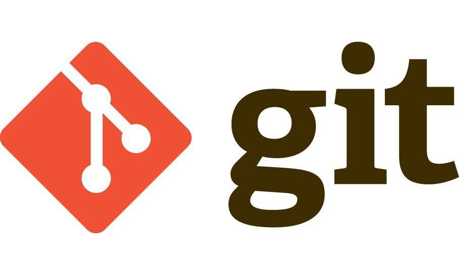

Mis cursos



Git es un sistema de control de versiones distribuido que se utiliza para rastrear y administrar cambios en el código fuente
y otros archivos de un proyecto de software. Fue creado en 2005 por Linus Torvalds, el creador del sistema operativo Linux.
La idea de Git surgió porque Torvalds estaba frustrado con los sistemas de control de versiones existentes en ese momento,
que encontraba lentos y difíciles de usar. Quería un sistema que fuera rápido, escalable y fácil de usar, y decidió escribir
uno por sí mismo.
En febrero de 2005, Torvalds lanzó la primera versión pública de Git. Inicialmente, Git se utilizó principalmente para el
desarrollo de Linux, pero pronto se extendió a otros proyectos de software de código abierto.
Una de las características clave de Git es que es un sistema de control de versiones distribuido. Esto significa que cada desarrollador
que trabaja en un proyecto tiene una copia completa de todo el historial de cambios en su propio equipo, lo que lo hace ideal para
proyectos distribuidos en los que varios desarrolladores pueden trabajar en diferentes partes del código al mismo tiempo.
Otra característica importante de Git es que utiliza una técnica llamada "ramificación" que permite a los desarrolladores trabajar
en diferentes versiones
del código simultáneamente, lo que les permite experimentar con nuevas características y arreglar errores
sin afectar el código principal.
Desde su lanzamiento, Git se ha convertido en uno de los sistemas de control de versiones más populares y ampliamente utilizados
del mundo, y es una
herramienta esencial para el desarrollo de software moderno. Git ha sido adoptado por muchas empresas
líderes de tecnología, como Microsoft, Google
y Amazon, y ha sido fundamental para el desarrollo de proyectos de software de
código abierto como Linux, Ruby on Rails y jQuery.
Sitio oficial de Git. Sigue leyendo
Curso de Git por W3Schools. Sigue leyendo

HTML, o HyperText Markup Language, es el lenguaje de marcado estándar utilizado para crear páginas web. Fue creado en 1989 por
Tim Berners-Lee, un científico de la computación británico que trabajaba en el CERN, el laboratorio de física de partículas ubicado
en Suiza.
En ese momento, Berners-Lee estaba buscando una forma de compartir información entre sus colegas de una manera más eficiente.
En lugar de enviar documentos físicos por correo o fax, Berners-Lee propuso un sistema basado en hipertexto, donde los usuarios podrían
navegar por diferentes documentos a través de enlaces de texto. HTML fue desarrollado como el lenguaje que permitiría a los usuarios
crear estos documentos hipertexto.
La primera versión de HTML fue publicada en 1991, y fue conocida como HTML 1.0. Esta versión original tenía una serie de elementos
básicos, como el título de la página, los encabezados, los párrafos y las listas. Sin embargo, no incluía elementos más avanzados como
imágenes o formularios.
A medida que la web se volvió cada vez más popular, surgieron nuevas versiones de HTML con más elementos y capacidades. En 1995, HTML
2.0 fue publicado, seguido por HTML 3.2 en 1997 y HTML 4.01 en 1999. Cada nueva versión de HTML agregó nuevos elementos y atributos,
lo que permitió a los desarrolladores crear páginas web más complejas y sofisticadas.
En 2000, la Asociación de Industrias de la Computación y las Comunicaciones (W3C) publicó una nueva versión de HTML llamada XHTML.
XHTML era una
versión reformulada de HTML que seguía las reglas de sintaxis más estrictas y coherentes del lenguaje XML.
En 2010, el W3C comenzó a trabajar en una nueva versión de HTML llamada HTML5. HTML5 incluyó una gran cantidad de nuevos elementos y
capacidades,
incluidos elementos multimedia como audio y video, gráficos vectoriales escalables (SVG) y formularios mejorados. HTML5
también hizo que las páginas
web fueran más accesibles y fáciles de usar en dispositivos móviles.
Hoy en día, HTML sigue siendo el lenguaje principal utilizado para crear páginas web. Ha evolucionado a lo largo de los años para incluir
nuevas capacidades
y adaptarse a los cambios en la tecnología y la forma en que las personas acceden a la información en línea.
Sitio oficial del W3C. Sigue leyendo
Curso de HTML por W3Schools. Sigue leyendo

CSS, o Cascading Style Sheets, es un lenguaje utilizado para describir el estilo y la presentación de una página web. Fue creado en 1994 por Håkon Wium Lie, un científico de la computación noruego que trabajaba en CERN, el mismo laboratorio donde Tim Berners-Lee desarrolló HTML.
La idea detrás de CSS era separar la presentación visual de una página web del contenido y la estructura de la página. Antes de CSS, la presentación visual de una página web estaba integrada directamente en el código HTML, lo que hacía que la creación y el mantenimiento de páginas web fueran mucho más difíciles. CSS permitió a los desarrolladores separar la presentación visual del contenido y la estructura, lo que simplificó el proceso de creación de páginas web.
La primera versión de CSS, conocida como CSS1, fue lanzada en 1996. CSS1 incluía una serie de propiedades de estilo que permitían a los desarrolladores controlar
la apariencia de los elementos en una página web, como la fuente, el tamaño y el color del texto, así como el color de fondo y los márgenes. También permitió a los
desarrolladores definir estilos para diferentes tipos de elementos en una página, como encabezados, párrafos y listas.
En 1998 se publicó CSS2, que agregó nuevas propiedades y capacidades, como la posibilidad de
definir diseños de página complejos y soporte para hojas de estilo externas. CSS2 también introdujo
el concepto de "flotantes", que permitió a los desarrolladores crear diseños de página más
complejos y flexibles.
En 2011, el World Wide Web Consortium (W3C) publicó CSS3, que incluía una serie de nuevas
capacidades y propiedades. CSS3 permitió a los desarrolladores crear diseños de página más
avanzados y sofisticados, como sombras y bordes redondeados, animaciones y transformaciones,
y efectos de transición.
Hoy en día, CSS sigue siendo una parte fundamental de la web moderna, permitiendo a los
desarrolladores controlar la apariencia y el diseño de una página web con precisión y flexibilidad.
Con la creciente demanda de páginas web responsivas y adaptativas, CSS ha evolucionado para permitir
que las páginas web se adapten a diferentes tamaños de pantalla y dispositivos, lo que la convierte en una herramienta esencial para el desarrollo web moderno.
Sitio oficial del W3C. Sigue leyendo
Curso de CSS por W3Schools. Sigue leyendo